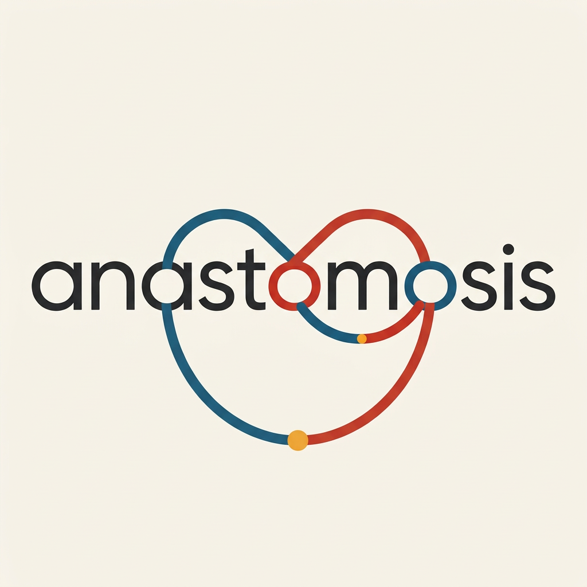
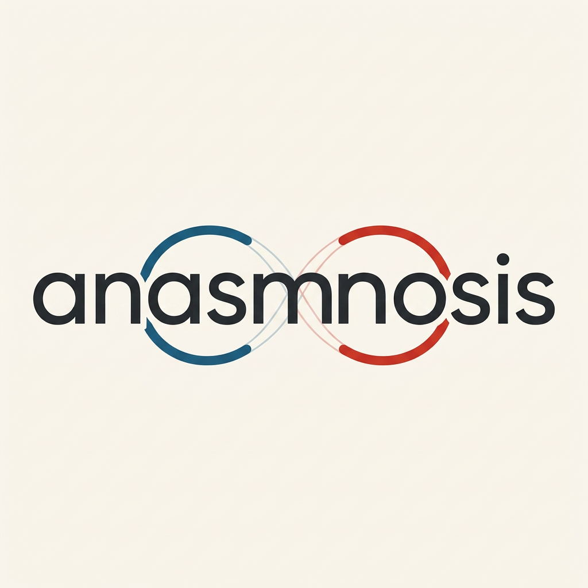

Anastomosis.MD · Logo lab · WM-3 mechanics round
The infinity stays. The m breathes.
Two ways to keep the loop you loved — pick your mechanic.
The conflict was never the infinity — it was where the infinity crosses: exactly behind the m. These two edits keep the loop prominent and complete, and each solves the m differently. Both built from the original you liked, both in paired versions.

The original — the loop you loved
The two o's as the infinity's loops, joined behind the m. Kept here as the reference — every edit below is measured against it.
Version without ".md" — the decision

Mechanic 1 · The underpass
The loop dips below the baseline as it travels between the o's, passing beneath the m like a river under a bridge, then rises to reconnect. The figure-eight stays complete — the m stands clean above it.

Mechanic 2 · The watermark layer
The loop keeps its original path crossing behind the m — but that stretch becomes a whisper-thin, lighter hairline, a background gesture, while the m renders solid and dark in front.
Check on both: the word reads as anastomosis at a glance · the m has three clean stems · the infinity is still a striking, complete presence · the font survived · the o's still read as o's.
The ".md" twins — same mechanics, gold suffix
Check: gold ".md" quiet at the end, spelled exactly right — and it matches its no-suffix twin.
What I measured: the underpass kept the most of the original's loop presence (the composition retained a tall structure from the dip below the baseline — measurable vertical extent well above the flattened first revision), while the watermark variant resolved flatter. Numbers help, but your eyes decide: which one still has the magic?